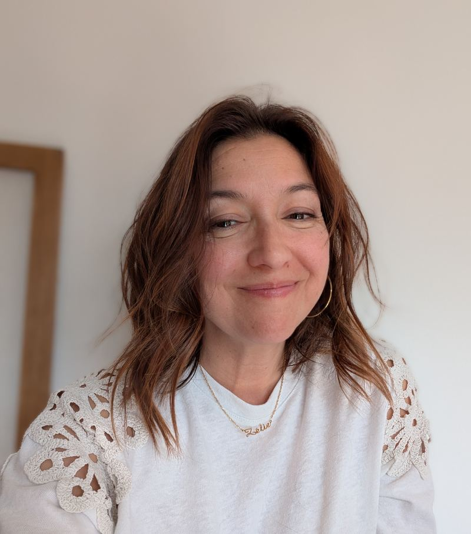

Cabinet à Grésy-sur-Aix · Séances en cabinet ou en plein air
Prendre rendez-vous
Mon approche est intégrative, c'est-à-dire qu'elle est construite à partir de plusieurs théories, et que je peux utiliser plusieurs techniques pour vous accompagner.
Mais le facteur le plus important dans le succès d'une thérapie est la qualité de l'alliance thérapeutique entre le psychologue et le patient ; c'est pourquoi le ressenti de l'un et de l'autre, dès la première rencontre, est une donnée cruciale à prendre en compte.
Un espace confidentiel où vous pouvez vous exprimer librement, sans crainte d'être jugé·e.
Chaque parcours est unique. Nous avançons à votre rythme, selon vos besoins du moment.
Pas une méthode unique — les outils sont choisis en fonction de ce que vous traversez et de vos objectifs.
La qualité de la relation entre nous est au fondement de l'efficacité du travail thérapeutique.